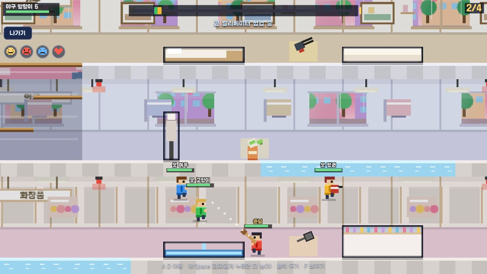
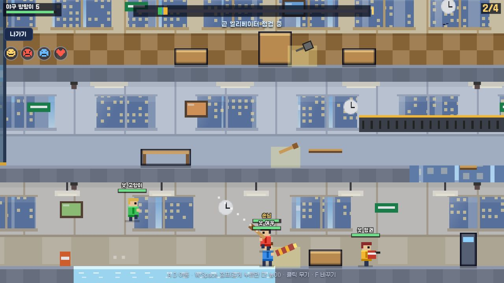
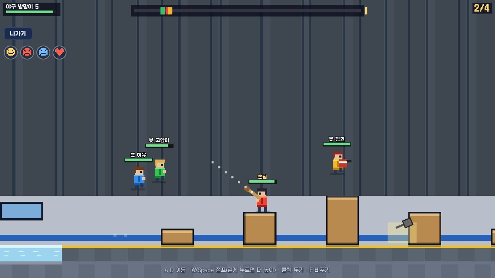
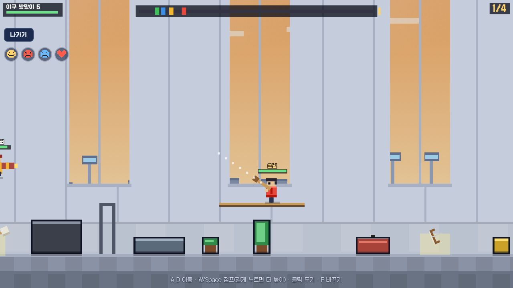
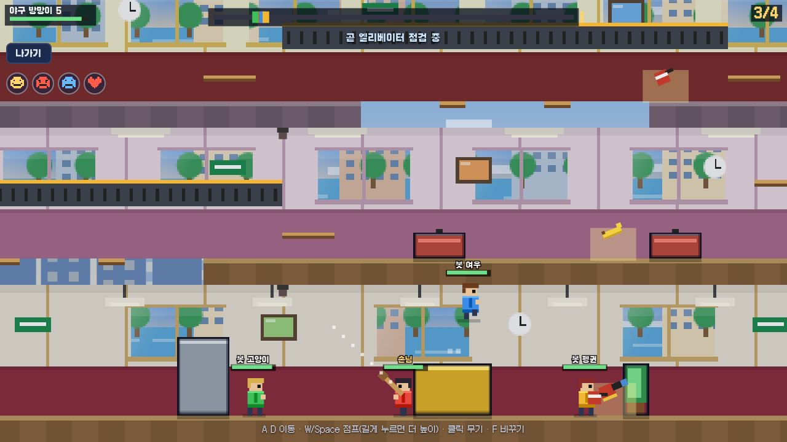
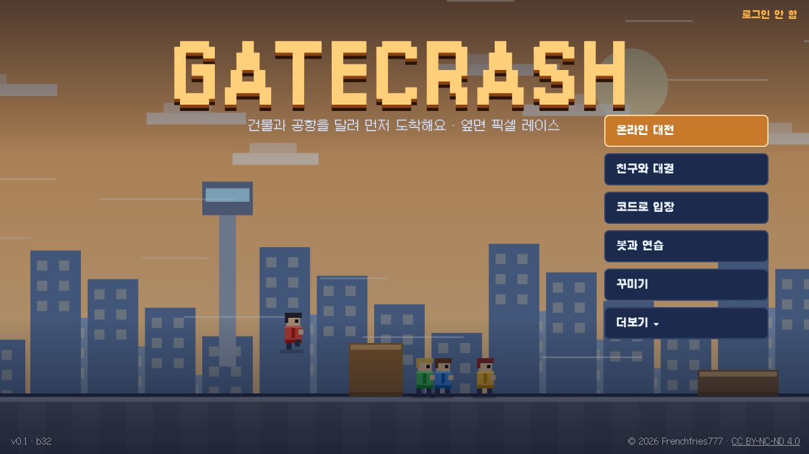

지금 버전
v0.1첫 정식 공개마지막 빌드 b34 · 2026-11-0912개 맵, 무기와 아이템 17가지, 봇과 연습, 온라인 대전
▶ 플레이맵마다 길이 달라요
엘리베이터와 계단, 미끄러운 바닥, 컨베이어, 구덩이 지름길. 옆으로 넘겨서 보세요.






달리고, 막고, 먼저 도착해요
먼저 도착하면 끝이에요. 가는 길에 서로 방해해도 돼요.
🏏무기와 아이템방망이, 프라이팬, 바주카, 폭죽 발사기부터 바나나 껍질, 압정, 끈끈이까지 17가지예요.
🚀꼴찌의 역전뒤처지면 가끔 로켓 신발이 나와서 3초 동안 빨라져요.
🛗길을 골라요안전하고 긴 길, 실패하면 한 층 내려가는 지름길 중에 골라요.
⚠️맵 이벤트엘리베이터 점검, 물청소, 컨베이어 역회전이 갑자기 일어나요.
👥친구와 함께방 코드나 링크로 친구를 불러요. 혼자 해도 봇이 함께 달려요.
👑꾸미기경기 보상 gC로 스킨 9종을 사서 입어요.
설치 없이 바로 출발해요
가입 없이도 되고, Frenchfries777 계정으로 로그인하면 코인과 꾸미기가 저장돼요.
START모드 고르기온라인 대전, 친구와 대결, 코드로 입장, 봇과 연습 중에 골라요.
3 · 2 · 1맵 훑어보기출발선에서 도착지점까지 맵을 보여 준 뒤 카운트다운이 시작돼요.
GOAL먼저 도착하기무기를 주워 방해하고, 엘리베이터와 지름길로 결승선까지 달려요.
조작
| A / D | 왼쪽, 오른쪽으로 이동 |
| W / Space | 점프 (길게 누르면 더 높이) |
| 마우스 | 조준하고 클릭해서 무기 사용 |
| F | 바닥의 무기와 바꾸기 |
| 폰 | 화면의 이동, 점프, 교체 버튼과 화면 터치 조준 |
패치노트
새 소식이 위에 있어요.
2026-11-09 · v0.1 · b34 · 게스트 모드
- 로그인 없이 온라인 대전을 누르면 로그인 창이 뜨고, 아래의 '게스트 모드로 하기'를 누르면 온라인 대전, 친구와 대결, 코드로 입장을 할 수 있어요
- 게스트는 기록, gC 보상 등 계정(Supabase)을 쓰는 건 저장되지 않아요
2026-11-09 · v0.1 · b33 · 점프대와 벽 낙서
- 점프대: 긴 맵에 생겼어요. 밟으면 높이 튀어 올라 상자 위의 높은 길로 질러가요 (봇은 뛰어넘어요)
- T 키를 누르면 그 자리 벽에 낙서가 남아요. 이모티콘 버튼으로 고른 그림이 나오고 10초 뒤 사라져요 (폰은 낙서 버튼)
2026-11-06 · v0.1 · b32 · 엘리베이터와 구덩이 길 정리
- 구덩이 지름길(징검다리/컨베이어 다리)이 올라온 곳과 올라갈 곳 사이, 실제로 지나가는 길에 놓여요
- 봇은 위험한 징검돌을 밟지 않고 안전한 길로 가요
2026-11-03 · v0.1 · b31 · 로켓 신발, 압정, 끈끈이
- 꼴찌일 때 아이템을 주우면 가끔 로켓 신발이 나와요. 클릭하면 3초 동안 빨라져요
- 압정: 바닥에 놓으면 밟은 사람이 아파하며 튀어 올라요
- 끈끈이: 바닥에 놓으면 지나가는 사람이 잠깐 느려져요
2026-11-02 · v0.1 · b30 · 맵 미리보기, 점프, 폰 화면 정리
- 맵 고르는 화면에 맵 모양 미리보기가 보여요
- 짧게 눌러도 3칸 높이 장애물을 넘을 수 있고, 길게 누르면 더 높이 뛰어요
- 출발선에서 캐릭터 사이를 넓히고 이름표가 겹치면 위로 쌓아요
- 인트로의 시작 안내가 잘 보이도록 바탕을 깔았어요
- 긴 맵 소개 시간을 최대 8초로 줄였어요
- 폰 세로 로비에서 버전과 저작권 글자가 겹치지 않아요
2026-11-01 · v0.1 · b29 · 로비 버튼 정리
- 로비 버튼을 6개로 줄이고, 무기·조작, 패치노트, 최적화, 사이트로 돌아가기는 더보기 안으로 옮겼어요
2026-11-01 · v0.1 · b28 · 파쿠르 더 늘리기, 랜덤 맵
- 층마다 상자 넘기와 떠 있는 발판 길이 생겼어요
- 구덩이는 징검다리로 건너면 빠르지만 떨어지면 아래층이고, 위쪽 컨베이어 다리로 가면 안전하지만 느려요
- 맵 고르는 화면에 랜덤 맵이 생겼어요
2026-11-01 · v0.1 · b27 · 백화점 새 단장
- 백화점이 흰색 고급 분위기로 바뀌었어요
- 층마다 화장품, 의류, 가구, 식품, 가전 매장으로 진열대와 벽 장식이 달라요
- 층마다 천장에 층 안내판이 걸려 있어요
2026-10-31 · v0.1 · b26 · 부드러운 이동, 파쿠르, 층마다 다른 배경
- 화면이 빠른 기기에서도 캐릭터와 카메라가 끊기지 않고 이어져요
- 긴 맵은 소개 때 도착 지점까지 더 천천히 보여 줘요
- 층마다 구덩이 징검다리와 상자 넘기 같은 파쿠르 구간이 생겼어요
- 층마다 벽 색, 창문, 조명 모양이 달라졌어요
2026-10-31 · v0.1 · b25 · 온라인 대전에 방장이 없어요
- 온라인 대전 대기실에서 방장이라는 말이 없어지고, 누구든 시작 버튼을 눌러 시작할 수 있어요
2026-10-31 · v0.1 · b24 · 새 로고
- 돌 아치 성문 모양의 새 로고를 써요
2026-10-31 · v0.1 · b23 · 엘리베이터 높이
- 엘리베이터가 더 높이 올라가요
2026-10-31 · v0.1 · b22 · 닉네임을 눌러 프로필 보기
- 대기실에서 계정으로 들어온 사람의 닉네임을 누르면 그 사람의 Gatecrash 프로필 카드가 열려요
2026-10-31 · v0.1 · b21 · 최적화
- 로비에 「최적화」 버튼 추가: 켜면 화질을 낮추고 화면을 초당 30번만 그려요
- 달리는 동안 화면이 계속 느리면 로비로 돌아왔을 때 최적화를 켜 보라고 한 번 알려 줘요
- 허브 설정의 최적화와 같은 값을 써요
2026-10-31 · v0.1 · b20 · 엘리베이터 정원, 이벤트 경고등
- 엘리베이터가 더 천천히 올라가요
- 엘리베이터는 먼저 탄 2명만 올라가고 나머지는 못 타요
- 이벤트가 시작되기 3초 전에 천장 경고등이 깜빡여요
2026-10-30 · v0.1 · b19 · 맵 구조 변경, 새 원거리 무기
- 맵마다 위층으로 가는 길의 위치와 종류가 달라졌어요
- 지하철, 박물관, 경기장이 가로로 길고 단상을 오르내리는 맵으로 바뀌었어요
- 점프 높이를 일정하게 고쳐서 장애물을 올라가다 마는 일이 없어졌어요
- 새 무기 산탄총, 장난감 활, 장난감 기관총
- 봇과 연습할 때는 gC를 받지 않아요
2026-10-30 · v0.1 · b18 · 함정, 이벤트, 이모티콘, 포토 피니시
- 새 무기 바나나 껍질: 바닥에 설치하면 밟은 사람이 미끄러져 넘어져요
- 맵 이벤트: 경기 중 엘리베이터 점검, 물청소, 컨베이어 역회전이 때때로 일어나요
- 화면 왼쪽 위 이모티콘 버튼 4개로 머리 위에 표정을 띄울 수 있어요
- 결승선을 통과한 순간의 사진이 결과 화면에 나오고 저장할 수 있어요
- 엘리베이터 가장자리에 들어간 봇이 끼던 문제를 고쳤어요
2026-10-30 · v0.1 · b17 · gC와 스킨
- 재화 gC를 추가했어요. 경기를 마치면 순위에 따라 받아요 (봇과 연습은 절반)
- 로비에 꾸미기를 만들고 스킨 9종을 넣었어요 (고양이 귀, 토끼 귀, 선글라스, 안전모, 닌자 복면, 붉은 망토, 천사 링, 왕관, 황금 옷)
- 스킨은 온라인에서 다른 사람에게도 보여요
- 허브 코인을 gC로 바꿀 수 있게 준비했어요 (1코인 = 20gC)
2026-10-30 · v0.1 · b16 · 더 큰 맵과 새 맵, 새 무기
- 맵 크기를 약 1.8배로 늘렸어요 (경기 시간은 2분 안팎)
- 새 맵 5개: 호텔, 도서관, 박물관, 경기장, 방송국
- 새 무기 5개: 해머, 대걸레, 새총, 소방 호스, 폭죽 발사기
- 공항에 면세점 거리와 탑승구 구간을 크게 늘렸어요
2026-10-29 · v0.1 · b15 · 허브 퀘스트 연결
- 한 판을 끝까지 마치고 결과 화면에서 나갈 때만 허브 퀘스트에 집계돼요 (들어가기만 하거나 중간에 나가면 세지 않아요)
2026-10-29 · v0.1 · b15 · 허브 퀘스트 연결
- 한 판을 끝까지 마치고 결과 화면에서 나갈 때만 허브 퀘스트에 집계돼요 (들어가기만 하거나 중간에 나가면 세지 않아요)
2026-10-29 · v0.1 · b14 · 로비 배경
- 로비 배경을 인트로와 같은 공항 레이스 장면으로 바꿨어요
2026-10-29 · v0.1 · b13 · 모바일 조작
- 모바일에서 화면 버튼으로 이동, 점프, 무기 교체를 할 수 있어요
- 화면을 누르면 그쪽으로 조준해서 무기를 써요
- 세로 화면에서는 가로로 돌려 달라고 안내하고, 로비 메뉴를 작은 화면에 맞췄어요
2026-10-29 · v0.1 · b12 · 더 길고 다른 맵
- 건물 맵을 더 길게 늘리고 층마다 가구 배치가 달라지게 했어요
- 엘리베이터를 넣었어요. 타면 위층까지 올라가요
- 미끄러운 바닥, 바닥 구멍, 가구 위 선반 같은 맵 기믹을 층마다 다르게 넣었어요
- 공항에 면세점과 탑승구 구간을 늘리고 미끄러운 바닥을 넣었어요
2026-10-29 · v0.1 · b11 · 코드 입장과 무기 위치
- 로비에 코드로 입장 화면을 따로 만들었어요
- 가구 속에 나와 먹을 수 없던 무기를 가까운 빈 바닥으로 옮겼어요
- 온라인 대전의 15초 자동 시작을 없앴어요. 방장이 시작을 눌러요
2026-10-29 · v0.1 · b10 · 인트로
- 인트로 곡이 클릭 없이 자동으로 나오게 했어요 (브라우저가 막으면 화면을 누르면 시작해요)
- 인트로 문구를 다른 게임과 같게 Made by Frenchfries777, With Claude AI로 바꿨어요
2026-10-29 · v0.1 · b9 · 창밖 풍경
- 창밖 풍경을 맵마다 다르게, 창마다 이어지는 파노라마로 그렸어요 (도시, 공항 활주로, 거리, 광장, 공원, 운동장, 공장 굴뚝)
- 로비 오른쪽 위의 허브 메뉴(알림, 투표, 계정 상자)를 없애고 이름과 로그인만 남겼어요
2026-10-29 · v0.1 · b8 · 인트로 곡과 봇
- 인트로에 기존 인트로 곡을 넣었어요 (인트로 길이도 곡에 맞췄어요)
- 봇이 실수를 덜해요
2026-10-29 · v0.1 · b7 · 장애물과 봇전
- 장애물에 테두리와 그림자를 넣어 배경과 구분이 잘 되게 했어요
- 봇과 연습에서는 맵을 직접 골라요 (온라인과 친구 대결은 무작위)
- 경기 중 '나가기' 버튼으로 중간에 나갈 수 있어요
2026-10-29 · v0.1 · b6 · 인트로와 직접 조준
- 처음 열 때 인트로 추가: 네 명이 달리고 부딪치는 장면 위에 제목이 나와요 (건너뛸 수 없어요)
- 무기를 마우스 방향으로 직접 조준해서 쏴요 (조준선 표시)
2026-10-29 · v0.1 · b5 · 로비 음악
- 로비 음악 Top of the Leaderboard 추가 (경기 중에는 Pixel Sprint)
- 두 곡과 효과음의 소리 크기를 맞췄어요
2026-10-29 · v0.1 · b4 · 맵 소개와 리플레이
- 맵은 모두 무작위로 정해져요 (봇전, 온라인 대전, 친구와 대결)
- 시작 전에 출발점에서 목표 지점까지 카메라가 맵을 소개해요
- 한 명이 도착하면 우승자 시점으로 리플레이를 보여 줘요
- 스페이스나 W를 꾹 누르면 계속 점프해요
- 봇이 가끔 실수해요 (망설이기, 점프 타이밍 놓치기, 엉뚱한 길)
- 결과 창의 '다시 하기' 버튼 삭제
2026-10-29 · v0.1 · b3 · 맵 5개와 음악
- 새 맵 5개: 지하철역, 백화점, 병원, 학교, 공장 (공장은 반대로 움직이는 컨베이어 벨트)
- 배경음악 Pixel Sprint 추가, 효과음과 소리 크기를 맞췄어요
2026-10-29 · v0.1 · b2 · 폰트·맵 고르기·소리·점프
- 픽셀 폰트(Galmuri)로 바꿨어요
- 맵을 직접 골라요 (온라인 대전도 고른 맵끼리 매칭, 무작위 없음)
- 효과음 추가: 점프, 타격, 총, 폭발, 줍기, 카운트다운, 도착
- 점프가 가끔 씹히던 문제 수정
- 그래픽: 창밖 도시와 먼 풍경, 천장 조명, 벽 장식, 방마다 다른 무늬, 그림자
2026-10-29 · v0.1 · b1 · 첫 공개
- 오피스 빌딩과 공항 두 맵
- 무기 5종: 방망이, 프라이팬, 고무탄 권총, 소화기, 바주카
- 봇과 연습, 온라인 대전, 친구와 대결